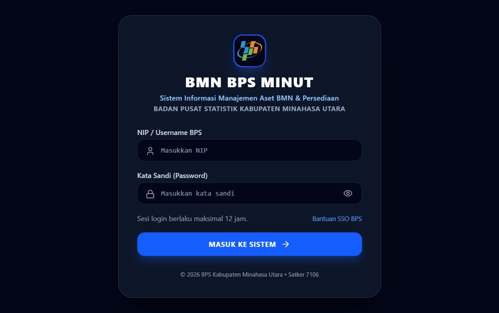

Panduan Penggunaan Sistem BMN-Minut
BMN BPS MINUT
Kata Pengantar dan Batas Verifikasi
Buku ini menjadi panduan operasional bagi pengguna BMN-Minut/BMN BPS MINUT. Isi menjelaskan tindakan yang ditemukan pada kode sumber aplikasi dan membedakannya dari layanan eksternal yang masih memerlukan pemeriksaan administrator.
Ruang lingkup dan tingkat bukti
| Penanda | Arti di dalam buku |
|---|---|
| Kode | Perilaku/label ditemukan pada kode sumber aplikasi yang ditinjau. |
| Publik | Halaman login pada alamat publik berhasil dimuat dan diambil tangkapan layarnya. |
| Belum diverifikasi | Keberhasilan di lingkungan operasional, akun, provider, dokumen produksi atau proses administrasi belum dikonfirmasi. |
Buku ini bukan pengganti peraturan BMN, SOP pengadaan, pedoman arsip, otorisasi pejabat, maupun dokumen resmi SAKTI/SIMAN. Informasi harga, kuantitas, status, dan catatan pada contoh di bawah adalah ilustrasi hipotetis, bukan data produksi.
Daftar isi
- IPendahuluan
- IIGambaran umum dan alur sistem
- IIIDashboard dan seluruh menu
- IVHak akses dan tanggung jawab
- VLogin dan penggunaan dasar
- VIDashboard dan persediaan
- VIIMaster data BMN
- VIIITransaksi barang masuk
- IXPermohonan barang ATK/ARK
- XVerifikasi dan persetujuan
- XIKonfirmasi penerimaan barang
- XIIDokumen dan berita acara
- XIIIPencarian, arsip, dan laporan
- XIVWhatsApp dan Fonnte
- XVAI Chatbot
- XVIManfaat dan batas klaim
- XVIIKeamanan dan tata kelola
- XVIIIPemecahan masalah
- XIXGlosarium dan FAQ
- XXPenutup dan kontak bantuan
Pendahuluan
BMN-Minut / BMN BPS MINUT adalah aplikasi internal BPS Kabupaten Minahasa Utara untuk menyajikan modul aset BMN, ruangan, persediaan ATK/ARK, permohonan, transaksi gudang, arsip dokumen, dan laporan dalam satu antarmuka.
Latar belakang, tujuan, dan sasaran
Aplikasi ditujukan untuk membantu pekerjaan pencatatan dan penelusuran administrasi yang tersebar di beberapa proses. Modul berbeda tetap memiliki fungsi berbeda: master aset mencatat BMN; master persediaan mencatat barang habis pakai; transaksi masuk/keluar mengubah jejak saldo; permohonan mengatur permintaan pegawai; dokumen mengarsipkan bukti; laporan menyajikan rekap sesuai filter dan hak akses.
Sasaran pengguna adalah Pimpinan, Pengelola BMN, Operator/petugas persediaan, administrator, auditor yang diberi akun, dan pegawai pemohon. Nama jabatan saja tidak memberikan izin; administrator menetapkan role dan permission pada akun.
Ruang lingkup dan persyaratan
- Alamat publik yang diperiksa: https://bmnbpsminut.online. Pengguna harus memiliki akun yang disediakan instansi.
- Gunakan browser modern yang diperbarui (misalnya Chrome, Edge, Firefox, atau Safari) dan koneksi internet stabil. Aplikasi dibangun sebagai situs responsif.
- Fitur kamera/QR memerlukan izin kamera browser dan konteks HTTPS yang didukung. Tolak izin jika tidak sedang memakai fitur tersebut.
- Dokumen dapat memuat PDF/gambar; batas aktual mengikuti validasi backend dan konfigurasi hosting.
Petunjuk membaca
Ikuti urutan bab untuk memahami alur. Langkah bertanda kode menjelaskan perilaku yang diprogram; setiap keputusan administrasi tetap mengikuti SOP dan instruksi pejabat berwenang. Jika label menu berbeda di deployment, gunakan administrator sebagai rujukan.
Gambaran Umum dan Alur Sistem
Aplikasi dimulai dari autentikasi, kemudian menampilkan beranda berdasarkan role: pengguna selain Pimpinan diarahkan ke Dashboard Utama, sedangkan role Pimpinan diarahkan ke Dashboard Pimpinan. Sidebar menyaring menu memakai permission; beberapa batas akses ruangan dan persetujuan juga diterapkan secara khusus di kode.

Ringkasan dua alur persediaan yang berbeda
Barang masuk
Input transaksi → status Menunggu Pemeriksaan → pemeriksaan fisik/dokumen → verifikasi diterima atau ditolak. Saldo bertambah hanya sesudah transaksi diverifikasi diterima. Transaksi baru belum otomatis menaikkan stok.
Permohonan pegawai
Pengajuan → pemeriksaan → persetujuan → diproses/serah terima → Pemohon memeriksa barang dan mengonfirmasi. Pengurangan saldo dicatat saat konfirmasi penerimaan berhasil, bersamaan dengan jejak barang keluar.
Dashboard dan Seluruh Menu
Sidebar aplikasi membagi fungsi ke Dashboard, Aset BMN, Persediaan, Dokumentasi/Laporan, dan Sistem/Keamanan. Menu yang terlihat mengikuti role. Daftar berikut adalah nama modul yang ditemukan pada kode, bukan jaminan seluruhnya tampil di setiap akun.
| Menu | Tujuan dan informasi | Akses umum di kode | Perhatian |
|---|---|---|---|
| Dashboard Utama | Ringkasan aset, persediaan, transaksi, indikator stok dan tindakan cepat. | viewDashboard, selain role Pimpinan. | Angka mengikuti state/filter; bukan pengganti rekonsiliasi fisik. |
| Dashboard Pimpinan | Ringkasan eksekutif dan pemantauan permohonan/indikator. | Beranda role Pimpinan. | Pimpinan diarahkan ke tampilan ini, bukan Dashboard Utama. |
| Semua Aset BMN | Daftar aset, kode barang, NUP, nama, kategori, kondisi, lokasi, pencarian, formulir, import/export dan cetak. | viewAssets atau manageAssets; tindakan ubah perlu izin kelola aset. | Pastikan Kode Barang dan NUP benar sebelum import/edit. |
| Manajemen Ruangan | Master ruangan, gedung, PIC, lokasi aset serta DBR. | Halaman memiliki aturan tampil khusus Administrator, Pengelola BMN, dan Pimpinan; perubahan tersimpan tetap memerlukan permission backend yang sesuai. | Ruangan otomatis yang dibuat saat import perlu ditinjau PIC/gedung jika nilai awal belum lengkap. |
| 3D Asset Mapping | Visualisasi ruangan dan penempatan aset kantor. | View/manage aset. | Rendering dapat diubah ke mode normal, performance, atau low. |
| Pemindahan Aset | Permintaan/pergerakan aset antarruangan dan cetak BAST mutasi. | manageMovements. | Perubahan lokasi mengikuti status/proses, jangan memindahkan tanpa berita acara/SOP. |
| Pemeliharaan | Jadwal dan tiket servis; riwayat pemeliharaan. | manageMaintenance. | Catat pekerjaan dan biaya berdasarkan bukti sah. |
| Penghapusan BMN | Daftar usulan/proses penghapusan. | manageDisposal. | Usulan aplikasi bukan pengesahan/penghapusan resmi eksternal. |
| Master Persediaan | Katalog ATK/ARK, lokasi/rak/bin, stok, minimum, transaksi barang masuk/keluar dan import. | viewInventory untuk baca; manageInventory untuk transaksi/harga. | Saldo menjadi rujukan aplikasi; verifikasi terhadap fisik berkala. |
| Gudang 3D | Visualisasi rak persediaan. | Akses persediaan. | Lokasi 3D membantu orientasi, bukan dokumen serah terima. |
| Permohonan Barang (ATK) | Pengajuan, filter status, pemeriksaan, persetujuan, proses dan konfirmasi penerimaan. | requestSupplies atau approveRequests. | Role Pimpinan dapat memantau tetapi dikecualikan dari aksi keputusan di alur ini. |
| Stock Opname | Input hasil hitung fisik, selisih, dan proses penyesuaian/berita acara. | stockOpname. | Penyesuaian saldo harus berdasarkan hitung fisik dan otorisasi. |
| Dokumen & BAST | Arsip nota, berita acara, dokumen perolehan/pemindahan/pemeliharaan/penghapusan/opname/lainnya. | viewReports; detail nilai nota dibatasi manageInventory. | Label Final bukan otomatis tanda tangan elektronik. |
| Laporan Resmi BPS | Daftar BMN, kondisi, penyusutan, saldo persediaan, stok menipis/kritis; cetak dan ekspor CSV. | viewReports. | Laporan mengikuti filter terkait; periksa cakupan sebelum ekspor. |
| Audit Trail Log | Riwayat aktivitas dan modul. | systemSettings. | Role Auditor Internal bawaan tidak otomatis memiliki permission ini. |
| Manajemen Pengguna | Akun pegawai, role/permission, status keaktifan, pengaturan pengguna. | manageUsers atau manageRoles. | Administrator memberikan akun; jangan berbagi sandi. |
| Pengaturan Sistem | Informasi satker, performa 3D, backup/import JSON, opsi reset data. | systemSettings. | Backup pada layar tidak terbukti mencakup seluruh state/backend. Jangan gunakan reset di lingkungan kerja tanpa instruksi tertulis. |
Hak Akses dan Tanggung Jawab Pengguna
Aplikasi menggunakan role-based access control (RBAC). Administrator dapat mengelola role dan permission. Matriks ini merangkum role awal yang ditemukan dalam kode sumber; administrator dapat mengubah/menambah role, sehingga konfigurasi akun aktual harus diperiksa di Manajemen Pengguna.
| Role awal | Dashboard/data | Tindakan utama | Batas penting |
|---|---|---|---|
| Administrator | Semua modul dan Dashboard Utama. | Aset, ruangan, stok, permohonan, opname, laporan, akun/role, pengaturan. | Akses penuh tetap harus dipakai sesuai penugasan; jangan memakai fitur reset sembarangan. |
| Pengelola BMN | Dashboard, aset, inventaris yang diizinkan, laporan. | Kelola aset, ruangan, pemindahan, pemeliharaan, penghapusan; membuat permohonan. | Tidak memiliki manageInventory, approveRequests, stockOpname, manajemen pengguna, atau pengaturan pada role awal. |
| Operator | Dashboard, lihat aset/persediaan, permohonan, laporan. | Kelola persediaan dan transaksi masuk/keluar; stock opname; dapat mengajukan permohonan. | Tidak dapat mengelola master aset/ruangan atau memutus persetujuan tahap pejabat pada role awal. |
| Pimpinan | Dashboard Pimpinan, lihat aset/persediaan, laporan dan ruangan sesuai aturan view. | Memantau ringkasan; izin terkait mutasi/penghapusan mengikuti konfigurasi. | Kode alur permohonan mengecualikan role bernama Pimpinan dari aksi approve/reject; pemohon sendiri saja yang mengonfirmasi penerimaan. |
| Auditor Internal | Dashboard, lihat aset/persediaan, laporan. | Review informasi tanpa edit pada role awal. | Role awal tidak memiliki systemSettings; menu Audit Trail mensyaratkan izin tersebut. |
| Pegawai Pemohon / Staff Satker | Hak lihat sesuai permission role yang dipasang. | Ajukan dan pantau permohonan milik sendiri bila requestSupplies aktif. | Bukan role default terpisah pada daftar awal; administrator harus memeriksa akun/role aktual. |
| Kepala Sub Bagian Umum / pejabat khusus | Mengikuti permission pada akun/role, bukan nama jabatan semata. | Tindakan hanya sesuai izin yang ditetapkan dan alur server. | Tidak ditemukan role awal dengan nama tersebut. Permintaan untuk persetujuan harus memakai role yang memang diotorisasi dan diuji. |
Makna permission penting
- viewAssets/viewInventory: melihat data; tidak otomatis memberi izin mengubah.
- manageAssets: pengelolaan BMN; manageInventory: pengelolaan stok/persediaan.
- requestSupplies: mengajukan permohonan; approveRequests: tindakan persetujuan mengikuti role dan urutan server.
- Nilai/harga nota dan kolom harga persediaan hanya ditampilkan bagi akun berizin manageInventory.
Login dan Penggunaan Dasar
Masuk ke aplikasi
- Buka https://bmnbpsminut.online pada browser dan pastikan alamat memakai HTTPS.
- Masukkan NIP/username BPS yang diberikan administrator.
- Masukkan kata sandi. Tombol ikon mata berlabel Tampilkan kata sandi/Sembunyikan kata sandi hanya mengubah visibilitas pada perangkat.
- Pilih Masuk ke Sistem. Jika gagal, baca pesan di formulir; jangan mengulang berkali-kali bila akun terkunci atau sesi server bermasalah. Teks “Bantuan SSO BPS” tampil di layar, tetapi alur tujuan SSO tidak dapat diverifikasi dari pemeriksaan publik.
- Setelah masuk, aplikasi memilih dashboard sesuai role. Menu yang tidak diizinkan dapat tidak terlihat atau menampilkan akses ditolak.

Desktop dan handphone
Pada desktop, sidebar tampil di sisi kiri. Pada layar kecil, navigasi utama berpindah ke tombol menu dan navigasi bawah; pencarian global berpindah menjadi tombol ikon. Ketuk satu menu lalu tutup drawer bila masih terbuka. Tabel dapat memerlukan gulir horizontal.
Penggunaan sehari-hari dan keluar
- Gunakan kolom pencarian/filter, lalu periksa status serta halaman tabel; badge dapat menunjukkan jumlah item tertunda/stok kritis.
- Di navbar, pencarian global mencari aset, persediaan, ruangan, atau NUP; pada desktop pintasan yang ditampilkan adalah Ctrl/⌘+K.
- Ikon QR membuka pemindai; berikan izin kamera hanya ketika Anda memakainya.
- Ikon notifikasi menampilkan informasi aplikasi; pemberitahuan di UI bukan bukti pesan WhatsApp sampai.
- Gunakan menu profil untuk keluar. Sesi login dinyatakan berlaku maksimum 12 jam.
Dashboard dan Data Persediaan
Membaca dashboard
Dashboard Utama menampilkan ringkasan aset, persediaan, aktivitas, dan peringatan yang sesuai role. Dashboard Pimpinan adalah beranda khusus role bernama Pimpinan dan berfokus pada pemantauan eksekutif. Kartu angka adalah ringkasan aplikasi, bukan pengesahan saldo atau nilai laporan resmi.
Mencari dan memfilter persediaan
- Buka Master Persediaan dari sidebar/bottom navigation.
- Gunakan tab kategori jenis seperti ATK/ARK, filter kategori/lokasi gudang/satuan, dan kolom pencarian.
- Kata kunci dapat dicari pada nama, kode barang, merek, jenis, kategori, satuan, lokasi, bin code, rak, atau subkategori. Urutan daftar dapat diubah menurut nama, kode, stok, atau lokasi.
- Gunakan kelompok indikator Stok Menipis dan Stok Habis; periksa angka saldo dan satuannya.
- Kolom harga satuan/nilai total hanya ditampilkan untuk akun dengan manageInventory. Ekspor mengikuti batas izin harga yang sama.
| Indikator | Makna yang dipakai aplikasi | Tindak lanjut |
|---|---|---|
| Aman | Saldo di atas batas minimum. | Tetap cocokkan saat transaksi/opname. |
| Menipis | Saldo positif tetapi sama dengan/di bawah stok minimum. | Koordinasikan pengadaan sesuai prosedur. |
| Habis | Saldo sama dengan nol. | Barang tidak dapat diminta melalui alur permohonan sampai saldo tersedia. |
Permohonan yang belum diserahkan dapat memakai stok sebagai reservasi; jumlah tersedia untuk permintaan baru bisa lebih kecil daripada saldo fisik tercatat. Jangan menjanjikan jumlah sebelum memeriksa saldo tersedia dan reservasi.
Tutorial Master Data BMN
Melihat, mencari, dan mengubah aset
- Buka Semua Aset BMN. Gunakan kata kunci dan filter kategori/kondisi/ruangan jika tampil.
- Buka detail aset untuk mengecek kode, NUP, nama, kondisi, nilai, foto, barcode/QR, ruang, dan PIC sesuai izin akun.
- Untuk mengubah data, pilih aset lalu Edit; periksa kategori BMN, identitas aset, lokasi, nilai, tanggal, kondisi dan penanggung jawab sebelum menyimpan.
- Untuk menambah aset, gunakan form tambah dan isi nilai yang tersedia. Simpan hanya setelah data dibandingkan dengan dokumen sumber.
- Penghapusan aset adalah tindakan berbeda dari penghapusan usulan BMN resmi. Periksa keterkaitan mutasi/perawatan dan minta otorisasi sebelum menghapus record.
Import aset dan ruangan
Menu import generik menerima Excel/XLS, CSV, TSV, dan JSON; menu Impor / Ekspor Master Aset menerima workbook Excel dengan sheet Master Aset dan susunan header lengkap. Template dan pesan validasi ditampilkan pada modal.
- Pilih file, baca preview, periksa baris tidak valid/konflik, dan pastikan kategori sumber dipetakan.
- Impor Master Aset menolak baris yang pasangan Kode Barang+NUP-nya sudah ada atau berulang; konflik tidak ditimpa otomatis.
- Impor aset mencocokkan ruangan melalui kode lokasi atau nama. Jika belum ada, sistem membuat master ruangan dasar dan menghubungkan aset ke ID ruangan. Lokasi kosong masuk ruangan Belum berlokasi.
- Periksa gedung/PIC dan lengkapi data ruangan bila ada informasi yang lebih akurat. Ini bukan alasan menahan keterkaitan aset dengan ruang yang dibuat.
- Jika sinkronisasi gagal, jangan mengulang import sebelum memeriksa apakah baris/ruangan sudah tersimpan.
Manajemen Ruangan dan DBR
Pengelola yang diizinkan membuka Manajemen Ruangan untuk mencari, menambah, mengubah, atau menghapus master. Kode/nama/gedung/lantai/PIC harus valid; ruangan yang memiliki aset dapat memiliki dampak saat dikelola. Periksa DBR dan lokasi setelah pemindahan atau import. Pengguna tanpa izin tidak dapat mengelola master ini.
Tutorial Transaksi Barang Masuk
Transaksi Barang Masuk dicatat oleh pengelola persediaan yang memiliki izin. Pencatatan awal membuat transaksi menunggu pemeriksaan dan belum menambah saldo.
- Buka Master Persediaan, bagian/transaksi Barang Masuk; pilih tindakan input barang masuk.
- Pilih barang dari master persediaan. Isi tanggal, nomor dokumen, sumber/vendor, jumlah, harga satuan jika diperbolehkan, serta keterangan.
- Periksa nama/kategori/satuan/rak yang mengikuti master item. Periksa dokumen fisik, tanggal, jumlah dan total sebelum disimpan.
- Simpan. Transaksi memperoleh nomor referensi dan status Menunggu Pemeriksaan. Saldo belum berubah.
- Petugas melakukan pemeriksaan: siapa/kapan, kondisi Baik/Rusak Ringan/Rusak Berat, kecocokan jumlah, dokumen, dan barang.
- Setelah pemeriksaan, transaksi berstatus Sudah Diperiksa. Role berizin selanjutnya memverifikasi diterima atau ditolak.
- Stok bertambah hanya saat diterima dan lulus syarat (jumlah/dokumen/barang sesuai, kondisi bukan rusak berat). Penolakan tidak menambah saldo.
- Periksa kembali saldo dan riwayat transaksi. Jika salah, transaksi tertentu hanya dapat diedit saat Menunggu Pemeriksaan atau Ditolak. Transaksi yang sudah diperiksa/terverifikasi tidak dapat diedit biasa; ikuti alur koreksi yang disetujui.
| Status | Arti | Dampak saldo |
|---|---|---|
| Menunggu Pemeriksaan | Catatan transaksi sudah dibuat. | Belum berubah. |
| Sudah Diperiksa | Pemeriksaan dicatat, menunggu verifikasi akhir. | Belum berubah. |
| Diverifikasi | Penerimaan disetujui. | Stok bertambah. |
| Ditolak | Hasil penerimaan tidak disetujui. | Tidak bertambah. |
Tutorial Permohonan Barang ATK/ARK
Mengajukan sebagai Pemohon
- Buka Permohonan Barang (ATK) dan pilih Permohonan Baru.
- Pilih barang dari daftar/autocomplete master persediaan. Barang yang tidak mempunyai saldo tersedia tidak dapat dipilih/diajukan.
- Tambahkan hingga maksimal 100 jenis barang; satu barang tidak boleh dibuat menjadi dua baris terpisah dalam permohonan yang sama.
- Masukkan jumlah bilangan bulat positif, spesifikasi/catatan per barang jika perlu, unit kerja, ruangan, keperluan, prioritas dan catatan umum.
- Periksa jumlah tersedia. Sistem menolak jumlah lebih besar daripada stok tersedia, stok tidak valid, jumlah nol/pecahan, atau barang yang stok tersedia 0.
- Pilih kirim dan konfirmasikan dialog pengajuan. Tunggu respons berhasil dan catat nomor permohonan/status.
- Pada daftar, cari dengan nomor permintaan, nama barang, kode/spesifikasi, nama pemohon, unit kerja atau keperluan; gunakan filter status untuk pemantauan.
Status utama
Diajukan → Diverifikasi → Disetujui → Diproses → Menunggu Konfirmasi → Diterima. Status akhir lain termasuk Ditolak dan Dibatalkan. Pada pemenuhan sebagian, status dapat tetap Diproses selama sisa barang belum diterima.
Pemohon biasa dapat membatalkan pengajuannya sendiri saat status Diajukan, dengan alasan sesuai validasi. Role petugas/pejabat berizin dapat memiliki tindakan pembatalan lanjutan sesuai aturan. Riwayat tidak dihapus untuk menutupi transaksi.
Tutorial Verifikasi dan Persetujuan
Server mengizinkan urutan perubahan status yang terdefinisi. Tahap persetujuan tidak boleh dilompati.
| Tahap/status asal | Tindakan | Role/izin sesuai kode | Validasi utama |
|---|---|---|---|
| Diajukan | Diverifikasi | Pengelola permohonan: manageInventory atau role dengan izin persetujuan yang tidak dikecualikan. | Review jumlah, pemohon, stok, kebutuhan; perubahan status hanya satu tahap. |
| Diajukan | Ditolak | Role review yang berizin. | Alasan penolakan wajib 5–500 karakter. |
| Diverifikasi | Disetujui atau Ditolak | approveRequests dan bukan role Pimpinan yang dikecualikan. | Jumlah setuju bilangan bulat >0 dan tidak melebihi jumlah yang diminta. Penolakan memerlukan alasan 5–500 karakter. |
| Disetujui | Diproses | manageInventory. | Pastikan stok/reservasi dan rencana penyerahan. |
| Diproses | Menunggu Konfirmasi | manageInventory. | Catat jumlah yang benar-benar diserahkan; ini bukan konfirmasi pemohon. |
Langkah kerja petugas
- Gunakan filter Diajukan atau Diverifikasi, buka rincian, dan cocokkan identitas pemohon/unit kerja, alasan, item, jumlah, satuan, stok tersedia.
- Lakukan review/verification; bila reject, tulis alasan yang jelas dan memenuhi batas karakter. Jangan mengedit permintaan Pemohon di luar alur.
- Role pejabat yang berwenang memeriksa jumlah disetujui per item dan meneruskan keputusan. Persetujuan tidak boleh diberikan sendiri oleh Pemohon.
- Operator/pengelola stok hanya setelah disetujui menyiapkan/menyerahkan barang; masukkan jumlah serah yang faktual.
- Periksa status tersimpan dan notifikasi aplikasi. Jangan menganggap notifikasi WhatsApp terkirim jika status provider belum dibuktikan.
Pada error simpan/sinkronisasi, baca banner status server. Jika sistem menyatakan status belum dapat dipastikan, muat ulang data server dan periksa permohonan sebelum mencoba tindakan ulang.
Konfirmasi Penerimaan Barang
Fitur konfirmasi penerimaan tersedia dalam kode API. Pemohon hanya boleh mengonfirmasi permohonan milik akun sendiri, dan hanya setelah petugas menyerahkan barang.
- Buka daftar permohonan dan temukan item milik sendiri dengan status Menunggu Konfirmasi.
- Periksa barang satu per satu: nama, satuan, jumlah yang disetujui dan jumlah yang benar-benar diterima. Jangan konfirmasi barang yang belum diterima.
- Jika cocok, pilih tindakan konfirmasi penerimaan dan tunggu hasil berhasil. Server mencatat penerimaan dan mutasi barang keluar secara transaksional.
- Periksa status: jika seluruh jumlah disetujui telah diterima, status menjadi Diterima; untuk pemenuhan sebagian, proses dapat tetap Diproses dengan sisa yang belum diterima.
- Jika ada selisih, laporkan melalui tindakan selisih penerimaan dengan uraian 5–500 karakter; jangan menekan konfirmasi sebagai pengganti laporan selisih.
Konfirmasi berhasil mengurangi saldo berdasarkan kuantitas yang diserahkan, memperbarui status Aman/Menipis/Habis, dan membuat record barang keluar. Sistem juga memeriksa saldo setelah memperhitungkan reservasi permohonan lain. Jika stok berubah atau tidak cukup, tindakan dapat ditolak; muat ulang dan hubungi petugas.
Petugas dengan manageInventory dapat memproses penyerahan ulang setelah laporan selisih pada alur yang disediakan. Gunakan hanya setelah menghitung ulang barang dan mencatat alasan.
Manajemen Dokumen dan Berita Acara
Upload dokumen umum
- Buka Dokumen & BAST lalu pilih unggah dokumen.
- Pilih berkas dan isi judul, jenis dokumen, nomor, tanggal, status, deskripsi serta tag yang tersedia.
- Periksa nama berkas/ukuran dan metadata; pilih Draft atau Final sesuai proses internal dan simpan.
- Tunggu konfirmasi berhasil. Setelah muncul di arsip, gunakan pratinjau untuk memeriksa apakah lampiran dapat dibuka.
Kategori arsip mencakup Nota, Berita Acara, Dokumen Perolehan, Dokumen Pemindahan, Dokumen Pemeliharaan, Dokumen Penghapusan, Dokumen Stock Opname, dan Dokumen Lainnya. Upload biasa mencakup berkas PDF/gambar dan berkas yang diizinkan server; ukuran maksimum aplikasi default tercatat 25 MB tetapi batas proxy/hosting bisa lebih kecil.
Upload nota belanja ATK/ARK
- Pilih Upload Nota Belanja. Lampirkan bukti fisik berupa PDF atau foto/gambar. Pada perangkat yang mendukung, modal menyediakan kamera untuk memotret nota; berikan izin kamera dan pastikan tulisan/angka terbaca.
- Masukkan nama toko/vendor, kategori nota, tanggal, nomor nota (dapat dibuat otomatis), keterangan dan status Draft/Final.
- Tambah minimal satu baris rincian: barang, kategori, satuan (atau tambah satuan), jumlah bilangan bulat positif, harga satuan tidak negatif. Tinjau subtotal dan total nota otomatis.
- Simpan dan tunggu respons server. Bila upload gagal, baca pesan; jangan membuat unggahan duplikat sebelum memeriksa arsip.
- Nota Draft dapat diedit oleh pengelola stok berizin; Final hanya dapat diedit oleh izin pengaturan sistem sesuai kode.
Privasi, tanda tangan, dan pemulihan
- Harga, total dan lampiran nota dibatasi role pengelola persediaan; pengguna tanpa izin mungkin hanya melihat metadata.
- Kode mengimplementasikan penyimpanan privat backend dan salinan cadangan basis data untuk dokumen. Konfigurasi storage/retensi lingkungan hosting dan pemulihan harus diverifikasi administrator.
- Jika lampiran hilang tetapi metadata ada, UI mendukung unggah ulang berkas asli yang sama dengan verifikasi identitas/ukuran/hash; jangan mencoba mengganti berkas dengan versi berbeda.
- Tidak ditemukan alur tanda tangan elektronik yang membuktikan keabsahan dokumen. Status “Final”, “Sah” atau metadata lain bukan bukti tanda tangan pejabat tersertifikasi.
Pencarian, Arsip, dan Laporan
Pencarian efektif
- Gunakan kode barang/NUP untuk aset, kode/nama/bin/rak untuk persediaan, atau nomor permohonan untuk transaksi.
- Di Dokumen & BAST gunakan filter jenis, pencarian judul/nomor/pengunggah/vendor/tanggal/deskripsi/nama berkas.
- Pengelola persediaan dapat menggunakan batas total nota minimum/maksimum dan hasil pencarian lintas rincian item (nama/kode/satuan/kategori).
- Gunakan kata kunci spesifik. Jika tidak ditemukan, hapus filter, periksa ejaan/nomor, role, status, dan tanggal.
Laporan yang terlihat pada kode
| Jenis laporan | Isi utama | Keluaran |
|---|---|---|
| Daftar BMN | NUP, nama/kode barang, merk, ruangan, kondisi, nilai buku. | Cetak halaman (landscape), ekspor CSV. |
| Kondisi Aset | Lokasi, kondisi, PIC, status aset. | Cetak dan CSV. |
| Nilai & Penyusutan | Tahun, nilai perolehan, akumulasi penyusutan, nilai buku. | Cetak dan CSV. |
| Saldo Persediaan | Kode/nama, jenis, rak/bin, stok, satuan; harga untuk role berizin. | Cetak dan CSV. |
| Stok Menipis & Kritis | Barang tidak berstatus Aman, minimum dan status. | Cetak dan CSV. |
Filter dashboard yang relevan mempengaruhi kumpulan data laporan; rentang periode memfilter tanggal perolehan/aktivitas, sedangkan saldo tetap merupakan posisi stok saat ini. Laporan adalah rekap aplikasi, bukan file pelaporan resmi pemerintah yang sudah disahkan.
Dokumen dapat dibuka/diprint atau diunduh bila tombol/permission tersedia. Sebelum membagikan hasil, pastikan tidak menyertakan nilai finansial kepada penerima yang tidak berwenang dan periksa agar arsip tidak diunggah dua kali.
Notifikasi WhatsApp dan Fonnte
Status yang dapat dinyatakan
| Status | Dasar | Artinya bagi pengguna |
|---|---|---|
| Kemampuan ada di source | Backend menyediakan provider Meta/Twilio/Fonnte dan endpoint event permohonan/webhook. | Notifikasi dapat diprogram, bukan bukti provider tersambung. |
| Alamat situs/login tersedia | Halaman login publik berhasil dibuka saat pemeriksaan. | Tidak menguji pengiriman pesan. |
| Aktif/berhasil di production | Belum diverifikasi. | Jangan mengandalkan WhatsApp sebagai satu-satunya bukti status; periksa di aplikasi. |
Secara kode, event dapat dibuat saat permohonan diajukan atau berubah status. Pengiriman berjalan melalui backend, dibatasi provider dan konfigurasi penerima; respons “queued” berarti event antre, bukan pesan telah sampai. Kegagalan dicatat dan tidak otomatis dicoba ulang agar tidak mengirim pesan ganda.
Jika pesan tidak diterima
- Periksa status permohonan di aplikasi terlebih dahulu.
- Pastikan nomor WhatsApp profil benar melalui administrator, bukan dengan membagikan nomor orang lain ke chat publik.
- Laporkan nomor permohonan, waktu dan screenshot pesan error kepada administrator; jangan minta/menyimpan token API.
- Administrator memverifikasi provider, webhook, izin, log delivery dan nomor uji melalui prosedur rahasia instansi.
Tutorial Fitur AI Chatbot
Navbar setelah login menyediakan tombol Tanya AI. Modal mengirim pertanyaan melalui endpoint backend /api/ai/chat yang memerlukan sesi login; server membatasi frekuensi pertanyaan. Provider dan keberhasilan runtime tidak dapat diuji dari halaman login.
Cara memakai
- Masuk ke sistem, buka Tanya AI, dan tunggu panel asisten tampil.
- Tulis pertanyaan umum yang tidak memuat kata sandi, NIP pegawai lain, data nota rahasia, atau informasi sensitif.
- Tinjau jawaban sebagai petunjuk navigasi. Pastikan sendiri angka/status di menu resmi sebelum membuat keputusan.
- Jika error, gunakan tombol coba ulang bila tersedia; jangan mengirim ulang tindakan transaksi yang belum dipastikan statusnya.
Contoh pertanyaan aman
- “Bagaimana cara mengajukan permohonan ATK?”
- “Di menu mana saya melihat status permohonan?”
- “Apa langkah yang harus dilakukan jika stok menunjukkan habis?”
- “Bagaimana cara mencari arsip nota?”
Keunggulan dan Manfaat Sistem
Manfaat yang didukung oleh modul sumber
- Daftar aset, persediaan, lokasi, dokumen dan permohonan tersedia di menu yang terstruktur.
- Pencarian, filter, badge, kartu/tabel, dan pagination membantu menemukan catatan.
- Validasi jumlah dan saldo mencegah pengajuan melebihi stok yang dapat diminta.
- Barang masuk menunggu pemeriksaan sebelum mengubah saldo; penerimaan permohonan mencatat keluar stok.
- Role membatasi edit, persetujuan, informasi finansial, dan pengelolaan akun.
- Audit log dan nomor transaksi membantu menelusuri tindakan yang tercatat.
- Antarmuka responsif, navigasi seluler, QR scanner, visualisasi 3D, dan cetak/CSV tersedia pada source.
Manfaat yang diharapkan — bukan angka yang diukur
Integrasi antarmodul dapat membantu mengurangi pencatatan ulang dan mempercepat pencarian bila data diisi konsisten, pengguna dilatih, dan sistem produksi dipantau. Belum ada pengukuran independen di buku ini tentang penghematan waktu, penurunan kesalahan, tingkat adopsi, uptime, atau dampak audit. Jangan menjadikan harapan sebagai klaim kinerja.
Keamanan dan Tata Kelola Penggunaan
- Gunakan akun pribadi; jangan berbagi password atau meminjam role orang lain.
- Gunakan password unik dan jaga layar/perangkat, khususnya perangkat bersama.
- Periksa jumlah, kode barang/NUP, lokasi, nominal, vendor, file dan status sebelum menyimpan.
- Jangan mengonfirmasi barang sebelum benar-benar diterima dan dihitung.
- Jangan menyetujui permohonan sendiri atau bertindak di luar role/SOP.
- Jangan mengunggah dokumen yang tidak sah, kabur, tidak lengkap, atau milik transaksi lain.
- Batasi berbagi file hasil ekspor/nota berisi nilai. Gunakan saluran resmi instansi.
- Jangan menghapus transaksi/dokumen atau menjalankan restore/reset tanpa persetujuan tertulis dan salinan cadangan yang teruji.
- Keluar setelah pekerjaan selesai; jangan memakai tombol “Tampilkan kata sandi” ketika layar dilihat orang lain.
- Laporkan salah akses, data hilang, duplikasi, atau aktivitas mencurigakan kepada administrator segera.
Pemecahan Masalah
| Masalah | Kemungkinan sebab | Langkah aman | Hubungi |
|---|---|---|---|
| Tidak bisa login / sandi salah | NIP/username keliru, sandi tidak cocok, sesi/server. | Periksa ejaan dan Caps Lock; jangan kirim password ke orang lain. Minta reset/cek status akun. | Administrator akun |
| Menu tidak muncul | Role/permission tidak mencakup menu. | Bandingkan role pada profil dengan tugas; jangan pinjam akun dengan akses lebih tinggi. | Administrator RBAC |
| Data tidak tampil/tidak terbaru | Filter aktif, sinkronisasi gagal, akun tidak memiliki akses. | Hapus filter yang tidak diperlukan. Jika ada banner sinkronisasi, pilih “Muat ulang data server” dan verifikasi sebelum transaksi ulang. | Admin sistem |
| Nama barang tidak ditemukan | Belum ada di master, pencarian tidak cocok, kategori/filter membatasi. | Hapus filter dan cari dengan kode/nama; minta petugas memeriksa master, jangan membuat duplikat. | Pengelola stok |
| Stok tidak cukup / 0 | Saldo habis, stok minimum, reservasi permohonan lain. | Jangan mengubah jumlah untuk melewati validasi. Hubungi petugas untuk stok/opname dan jadwal pasokan. | Operator persediaan |
| Permohonan gagal dikirim | Barang tidak dipilih dari master, jumlah tidak valid/lebih stok, duplikat item, unit/keperluan kosong, koneksi. | Periksa semua baris; jumlah bulat >0, maksimal 100 jenis, item unik; lihat pesan validasi. Jika status tidak pasti, cek daftar sebelum kirim ulang. | Operator/admin |
| Status belum berubah | Belum diproses role terkait atau save/sync masih berjalan. | Refresh data server; catat nomor permohonan dan status terakhir. Jangan memotong tahap persetujuan. | Petugas tahap berikutnya |
| Barang masuk belum menaikkan stok | Masih Menunggu Pemeriksaan/Sudah Diperiksa atau ditolak. | Periksa transaksi; pastikan sudah diverifikasi diterima dan seluruh syarat terpenuhi. | Operator persediaan |
| Dokumen gagal diunggah | Format/ukuran ditolak, file tidak terbaca, jaringan/proxy. | Pastikan file PDF/foto yang didukung dan ukuran sesuai; coba jaringan stabil. Jangan mengganti bukti dengan file lain pada restore. | Admin sistem |
| Foto nota buram/kamera tak aktif | Fokus/pencahayaan, izin browser atau kamera digunakan aplikasi lain. | Letakkan nota datar, cukup cahaya, fokuskan kamera; periksa izin HTTPS/perangkat. Jika perlu unggah foto/PDF yang terbaca. | Petugas dokumen |
| Nota tidak ditemukan | Filter jenis/tanggal/nomor, role tidak melihat nota finansial. | Hapus filter, gunakan nomor nota/vendor/tanggal atau nama item. Pengelola persediaan memeriksa akses nilai. | Pengelola dokumen |
| WhatsApp tidak diterima | Provider, webhook, nomor atau konfigurasi belum terverifikasi; event mungkin queued/gagal. | Periksa status aplikasi, lalu laporkan waktu/ID. Jangan meminta token atau resend tanpa cek idempotensi. | Administrator integrasi |
| Chatbot tidak menjawab | Provider AI/kuota/koneksi/rate limit. | Tunggu lalu coba satu kali; periksa informasi sama pada menu resmi. | Administrator sistem |
| Tampilan tidak pas di ponsel | Zoom, orientasi, browser lama, tabel lebar. | Perbarui browser, muat ulang, coba potret/lanskap; gunakan gulir tabel/menu mobile. | Admin aplikasi |
| Banner “Sinkronisasi server gagal” | Server/koneksi/konflik data. | Tekan muat ulang server sekali setelah meninjau pesan; jangan hapus cache/data atau ulangi transaksi sebelum status diperiksa. | Administrator teknis |
Diagnosis di atas tidak memberikan kewenangan untuk mengubah database, migrasi, file server, environment, atau konfigurasi provider. Tindakan teknis hanya administrator berwenang.
Glosarium dan FAQ
| Istilah | Arti praktis |
|---|---|
| BMN | Barang Milik Negara yang dicatat/ditatausahakan sesuai aturan. |
| ATK / ARK | Alat Tulis Kantor / Alat Rumah Tangga Kantor dalam katalog persediaan. |
| NUP | Nomor Urut Pendaftaran aset. |
| DBR | Daftar Barang Ruangan. |
| SPB | Surat Permintaan Barang; permohonan internal persediaan. |
| Pemohon | Pegawai yang mengajukan permohonan atas akun/unitnya. |
| RBAC | Pengaturan akses berdasarkan role dan permission. |
| Verifikasi | Pemeriksaan permohonan/transaksi sebelum tahap berikutnya. |
| Persetujuan | Keputusan oleh role yang diotorisasi; bukan tugas Pemohon. |
| Stok tersedia | Jumlah yang bisa diajukan setelah mempertimbangkan validasi/reservasi aplikasi. |
| Stock Opname | Pencocokan saldo buku dengan hitung fisik. |
| Draft / Final | Status dokumen di aplikasi. Final bukan otomatis tanda tangan elektronik atau legalisasi. |
| BAST | Berita Acara Serah Terima; arsip pendukung sesuai transaksi/SOP. |
| Fonnte / webhook | Provider/endpoint eksternal WhatsApp yang memerlukan konfigurasi dan uji nyata. |
Pertanyaan singkat
Apakah permohonan langsung mengurangi stok saat diajukan?
Tidak. Pengajuan mencatat permintaan/reservasi. Pengeluaran aktual dicatat saat serah terima dikonfirmasi Pemohon.
Apakah transaksi barang masuk langsung menaikkan saldo?
Tidak. Transaksi menunggu pemeriksaan dan verifikasi diterima.
Apakah semua pengguna dapat melihat harga nota?
Tidak. Kode membatasi harga/rincian finansial kepada permission pengelola persediaan.
Apakah “Final” berarti ditandatangani elektronik?
Tidak ada bukti proses tanda tangan elektronik dalam pemeriksaan kode ini. Gunakan prosedur penandatanganan resmi instansi.
Apakah chatbot boleh menentukan keputusan?
Tidak. Gunakan AI hanya untuk petunjuk; cek data dan SOP resmi sebelum tindakan.
Bagaimana bila baris Excel memiliki ruangan baru?
Alur import aset membuat entri master ruangan dasar dan menghubungkan aset. Periksa nama, gedung, PIC, dan kategori ruangan setelah import.
Penutup dan Kontak Bantuan
Penggunaan BMN-Minut yang teliti dapat membantu menyatukan pencatatan, permohonan, transaksi persediaan dan arsip dalam alur yang dapat ditelusuri. Keandalan tetap bergantung pada data yang benar, role yang tepat, verifikasi fisik, dokumentasi yang sah, dan layanan backend/provider yang berfungsi.
Ikuti prosedur pengelolaan BMN, persediaan, pengadaan, serah terima dan arsip resmi BPS. Setiap pegawai bertanggung jawab atas akun dan tindakan yang dilakukan. Administrator perlu mengonfirmasi menu, role, konfigurasi produksi dan kontak support sebelum membagikan edisi final sebagai SOP.
Kontak bantuan (diisi oleh instansi)
| Administrator aplikasi | ____________________________________________ |
|---|---|
| Unit kerja / meja bantuan | ____________________________________________ |
| Telepon / surel resmi | ____________________________________________ |
| Jam layanan | ____________________________________________ |
Basis verifikasi: kode sumber aplikasi yang tersedia dan halaman login publik; akun internal, data produksi, tanda tangan elektronik dan delivery provider belum diuji langsung.
Hak perubahan: instansi dapat menyesuaikan kolom kontak dan melakukan tinjauan teknis/SOP sebelum menerbitkan sebagai pedoman formal.